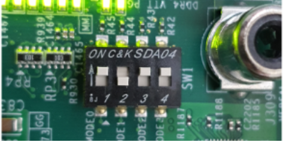

ブートおよびコンフィギュレーション¶
Versal™ ACAP 用にブートローダー、ベアメタル アプリケーション (APU/RPU 用)、および Linux オペレーティング システムを統合してロードする方法を示します。この章では、次のトピックについて説明します。
システム ソフトウェア: PLM、Arm® トラステッド ファームウェア (ATF)、U-Boot
スタンドアロン アプリケーションのブート イメージを生成する手順。
SD ブート、QSPI、および OSPI ブート モードのブート シーケンス。
これらの設定は、Vitis™ ソフトウェア プラットフォームと PetaLinux ツール フローを使用して実行できます。「Versal ACAP CIPS および NoC (DDR) IP コアの設定」では、PS 内に各プロセッシング ユニットのソフトウェア ブロックを作成することにのみに重点を置いていましたが、この章ではより大規模なシステムの一部としてこれらのブロックをロードする方法を説明します。
システム ソフトウェア¶
この章のブートおよびコンフィギュレーションの説明の大部分は、ここで挙げるシステム ソフトウェア ブロックについてです。
プラットフォーム ローダーおよびマネージャー¶
PLM (プラットフォーム ローダーおよびマネージャー) は、Versal ACAP の PMC (Platform Management Controller) ブロック内の専用プロセッサの 1 つで実行されるソフトウェアです。プラットフォーム管理、エラー管理、パーシャル リコンフィギュレーション、デバイスのサブシステム再起動など、起動および実行時の管理を担当します。PLM はイメージを再ロードし、パーシャル PDI とサービス割り込みをロードできます。PLM はブート ソースからプログラマブル デバイス イメージを読み取り、NoC の初期化、DDR メモリの初期化、プログラマブル ロジック、およびプロセッシング システムを含むシステムのコンポーネントを設定してから、デバイスのブートを完了します。
U-Boot¶
U-Boot はセカンダリ ブートローダーとして機能します。U-Boot は、PLM ハンドオフ後に Linux を Arm A72 APU にロードし、ボード コンフィギュレーションに基づいてプロセッシング システム内の残りのペリフェラルをコンフィギュレーションします。U-Boot は、eMMC、SATA、TFTP、SD、QSPI などのさまざまなメモリ ソースからイメージを取得できます。U-Boot は、PetaLinux ツール フローを使用して設定およびビルドできます。
Arm トラステッド ファームウェア¶
Arm トラステッド ファームウェア (ATF) は、APU の EL3 (例外レベル 3) で実行される透過的なベアメタル アプリケーション レイヤーです。ATF には、セキュア ワールドと非セキュア ワールドを切り替えるためのセキュア モニター レイヤーが含まれます。セキュア モニターの呼び出しと TBBR (Trusted Board Boot Requirements) の実装により、Versal ACAP の APU に Linux をロードするには ATF レイヤーが必須です。PLM は APU で実行される ATF をロードします。ATF は EL3 で動作し続けてサービス要求を待ちます。PLM は APU で実行される U-Boot を DDR にロードします。U-Boot は SMP モードで Linux OS を APU にロードします。ATF (bl31.elf) はデフォルトで PetaLinux に含まれており、PetaLinux プロジェクトの image ディレクトリにあります。
スタンドアロン アプリケーションのブート イメージの生成¶
Vitis ソフトウェア プラットフォームは、Versal アーキテクチャの自動ブート イメージ作成をサポートしていません。ブータブル イメージを生成するには Bootgen を使用します。Bootgen は、Vitis ソフトウェア プラットフォーム パッケージに含まれるコマンド ライン ユーティリティです。Bootgen の主な機能は、ブータブル イメージのさまざまなパーティションを統合することです。Bootgen は、Bootgen イメージ フォーマット (BIF) ファイルを入力として使用し、バイナリ BIN または PDI フォーマットで 1 つのファイル イメージを生成します。不揮発性メモリ (NVM) (QSPI または SD カード) にロードできる単一のファイル イメージを出力します。次の手順を実行して、PDI/BIN ファイルを生成します。
Vitis IDE で [XSCT Console] ビューがまだ開いていない場合は、[Window] → [Show View] をクリックして開きます。Show View ウィザードの検索バーに
xsct consoleと入力します。[Open] をクリックして、コンソールを開きます。
[XSCT Console] で次のコマンドを入力して、ブート イメージを生成するフォルダーを作成します。
mkdirbootimagescdbootimages/
<design-package>/<board-name>/standalone/<cips or cips_noc>/<apu or rpu>/ディレクトリにある sd_boot.bif ファイル、<Vitis platform project>/hw/<.pdi-file>ディレクトリにある PDI ファイル、<Vitis application-project>/Debugフォルダーにあるアプリケーションの ELF ファイルを、手順 2 で作成したフォルダーにコピーします。注記： 必要に応じて、任意のテキスト エディターで
sd_boot.bifファイルを開き、Vitis プロジェクトごとに PDI または ELF の名前を変更します。[XSCT Console] ビューで次のコマンドを実行します。
bootgen -image <bif filename>.bif -arch versal -o BOOT.BIN[XSCT Console] ビューには、次のログが表示されます。

SD ブート モードのブート シーケンス¶
次の手順は、SD ブートモードのブート シーケンスを示しています。
イメージを確認するには、必要なイメージを SD カードにコピーします。
スタンドアロンの場合は、
BOOT.BINを SD カードにコピーします。Linux イメージの場合は、
<plnx-proj-root>/images/linuxに移動し、BOOT.BIN、image.ub、およびboot.scrを SD カードにコピーします。
注記: リリースされたパッケージ パス (
<design-package>/<vck190 or vmk180>/linux/bootimages) の一部として、すぐにテスト可能なイメージを使用して VCK190/VMK180 ボードを起動するか 、「サンプル プロジェクト: PetaLinux を使用した Linux イメージの作成」を参照し、PetaLinux ツールを使用して独自の Linux イメージ セットをビルドします。SD カードを VMK180/VCK190 ボードの J302 コネクタに挿入します。
Micro USB ケーブルの一端を VMK180/VCK190 ボードの Micro USB ポート (J207) に接続し、もう一端をホスト マシンの空きの USB ポートに接続します。
スイッチ SW1 を次の図に示すように設定し、ボードを SD ブート モードに設定します。

12V 電源を VMK180/VCK190 の 6 ピン Molex コネクタに接続します。
使用しているホスト マシンによって、Tera Term または Minicom を使用して、ターミナル セッションを開始します。次の図に示すように、システムの COM ポートとボー レートを設定します。

ポート設定では、デバイス マネージャーで COM ポートを検証し、com ポートに対して Interface-0 を選択します。
電源スイッチ (SW13) を使用して VMK180/VCK190 ボードに電源を投入します。
注記: スタンドアロン イメージの場合は、それぞれのログがターミナルに表示されます。Linux イメージの場合は、ターミナルで起動シーケンスの後に user: root および pw: root を使用してログインできます。その後、ターミナルで gpiotest を実行します。次の図のようログが表示されます。 `

QSPI ブート モードのブート シーケンス¶
このセクションでは、QSPI ブートモードのブート シーケンスを示します。このためには、次の図に示すように QSPI ドーター カード (製品番号: X_EBM-01、REV_A01) を接続する必要があります。
図 2: VCK190 のドーター カード

注記: スタンドアロンの場合は、BOOT.BIN を SD カードにコピーします。Linux イメージの場合は、リリースされたパッケージ パス (
<design-package>/<vck190 or vmk180>/linux/bootimages) の一部として、すぐにテスト可能なイメージを使用して VCK190/VMK180 ボードを起動するか 、「サンプル プロジェクト: PetaLinux を使用した Linux イメージの作成」を参照し、PetaLinux ツールを使用して独自の Linux イメージ セットをビルドします。
次の手順に従って、イメージをドーター カードのフラッシュ メモリに書き込む必要があります。
カードの電源を切った状態で、ドーター カードを取り付けます。
次の図に示すように、ブート モード スイッチ SW1 を ON-OFF-OFF-OFF に設定します。

ボード上の SD カード スロットに SD カードを挿入します。

ボードに電源を投入します。U-Boot の段階で、「Hit any key to stop autoboot:」というメッセージが表示されたら、いずれかのキーを押し、次のコマンドを実行して QSPI ドーター カードのイメージをフラッシュ メモリに書き込みます。
sf probe 0 0 0 sf erase 0x0 0x10000000 fatload mmc 0 0x80000 boot.bin sf write 0x80000 0x0 ${filesize} fatload mmc 0 0x80000 image.ub sf write 0x80000 0xF00000 0x6400000 fatload mmc 0 0x80000 boot.scr sf write 0x80000 0x7F80000 0x999画像をフラッシュ メモリに書き込んだ後、ボードの電源スイッチをオフにし、ブート モード ピンの設定を QSPI モード (ON-OFF-ON-ON) に変更します。
ボードの電源を切って入れ直します。これで、QSPI フラッシュ内のイメージを使用してボードが起動します。
© Copyright 2020-2021 Xilinx, Inc.
Apache ライセンス、バージョン 2.0 (以下「ライセンス」) に基づいてライセンス付与されています。本ライセンスに準拠しないと、このファイルを使用することはできません。ライセンスのコピーは、http://www.apache.org/licenses/LICENSE-2.0 から入手できます。
適切な法律で要求されるか、書面で同意された場合を除き、本ライセンスに基づいて配布されるソフトウェアは、明示的または黙示的を問わず、いかなる種類の保証または条件もなく、「現状のまま」配布されます。ライセンスに基づく権限と制限を管理する特定の言語については、ライセンスを参照してください。